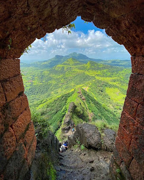
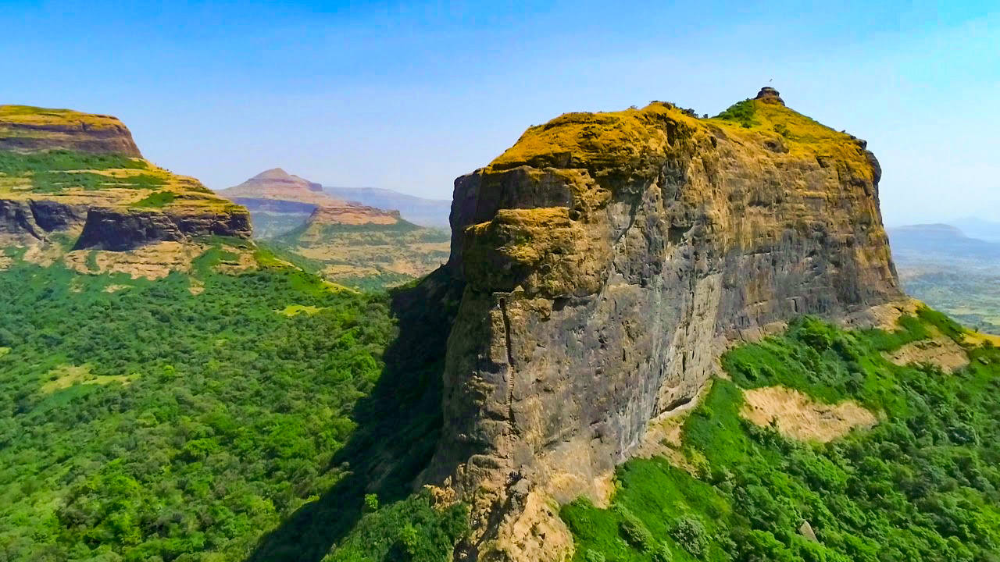

हरीहर किल्ला
Location : Click Here For Google Map
- माहिती
- हरीहर किल्ला, जो नाशिक जिल्ह्यात पश्चिम घाटाच्या पर्वतरांगेत स्थित आहे, महाराष्ट्रातील एक अत्यंत ऐतिहासिक आणि साहसी किल्ला आहे. किल्ल्याची उंची सुमारे १,१२६ मीटर (३,६०० फूट) आहे आणि हा किल्ला त्याच्या अत्यंत कठीण आणि तिरपी चढाईसाठी प्रसिद्ध आहे. हरीहर किल्ल्याच्या शिखरावर पोहोचण्यासाठी पर्यटकांना १७५० मीटर लांबीच्या उंच चढाईवर पायऱ्या चढाव्या लागतात, ज्यामुळे हा किल्ला ट्रेकर्ससाठी एक आव्हानात्मक ठिकाण बनतो. किल्ल्याच्या शिखरावर एक छोटं मंदिर आहे, जे धार्मिक दृष्ट्या महत्त्वाचं मानलं जातं. किल्ल्याच्या रचनेमध्ये प्राचीन दरवाजे, जलाशय आणि किल्ल्याच्या संरक्षणासाठी वापरण्यात आलेले भव्य भिंतींचा समावेश आहे.
या किल्ल्याचा इतिहास मध्ययुगीन काळापर्यंत पोहोचतो, आणि तो मराठा साम्राज्याच्या काळात एक महत्त्वाचा किल्ला होता. हरीहर किल्ल्याचं नामकरण "हरी" (पवित्र) आणि "हर" (भगवान) यावरून झालं आहे. किल्ल्याचे ऐतिहासिक महत्त्व असताना, तो एक रणनीतिक ठिकाण म्हणूनही वापरण्यात आला होता. किल्ल्याची संरचना आणि किल्ल्यावर असलेली पायऱ्या, त्याच्या सुरक्षा रचनेचं एक उत्तम उदाहरण आहेत. हरीहर किल्ला आज एक लोकप्रिय पर्यटन स्थळ आहे, विशेषतः साहसी ट्रेकिंग प्रेमींसाठी. किल्ल्याच्या शिखरावरून संपूर्ण परिसराचा देखावा, नाशिक शहराचं दृश्य आणि आसपासच्या पर्वतरांगेचे दृश्य पर्यटकांना आकर्षित करतात. हरीहर किल्ला एक आदर्श ठिकाण आहे, जो ऐतिहासिक महत्त्व, निसर्ग सौंदर्य आणि साहसी ट्रेकिंगचा अद्भुत संगम आहे.
Explore the historical beauty

